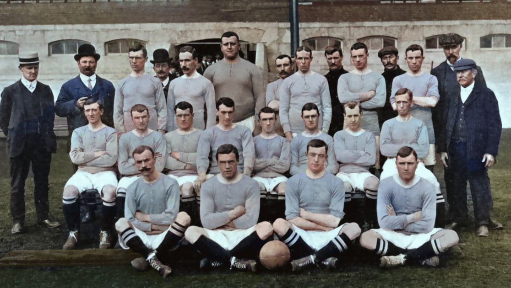

Historia y Leyenda
En 1904, el empresario Gus Mears y su hermano Joseph adquirieron el Stamford Bridge, un estadio de atletismo al cual Mears planeaba convertirlo en uno de fútbol. La familia le ofreció el estadio al Fulham Football Club, pero la oferta fue rechazada. Como consecuencia, los propietarios decidieron fundar su propio club para ocupar su nuevo estadio. Como ya existía un club llamado Fulham, los fundadores decidieron adoptar el nombre del adyacente barrio de Chelsea para el nuevo club, habiendo rechazado nombres como Kensington Football Club, Stamford Bridge Football Club y London Football Club. Los hermanos Mears fundaron formalmente el Chelsea Football Club el 10 de marzo de 1905 en el pub The Rising Sun ―actualmente The Butcher's Hook― en Fulham Road. Poco después de su fundación, fue elegido para participar en la Football League.
Como uno de los clubes más laureados del fútbol inglés, el Chelsea tuvo su primer momento de éxito en 1955, cuando ganó su primer campeonato de liga, y posteriormente consiguió otras importantes competiciones de copa durante los años 1965 y 1990. El club ha tenido su mayor y más importante período de éxito en las últimas dos décadas, ganando un total de 28 trofeos oficiales desde 1997. A nivel nacional, ganó seis campeonatos de liga/Premier League, ocho FA Cups, cinco Football League Cups y cuatro Community Shields. En el ámbito europeo y mundial, ha obtenido dos Liga de Campeones de la UEFA, dos Ligas Europa de la UEFA, una Liga Conferencia de la UEFA, dos Recopas de Europa, dos Supercopa de Europa y dos Copas Mundiales de Clubes FIFA dando un total de 11 títulos internacionales, lo que lo convierten en el segundo equipo inglés en el palmarés, tras el Liverpool F. C.
